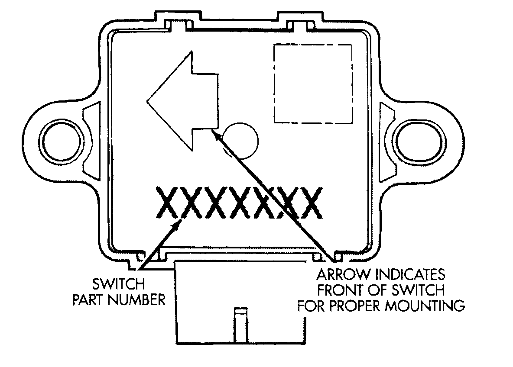
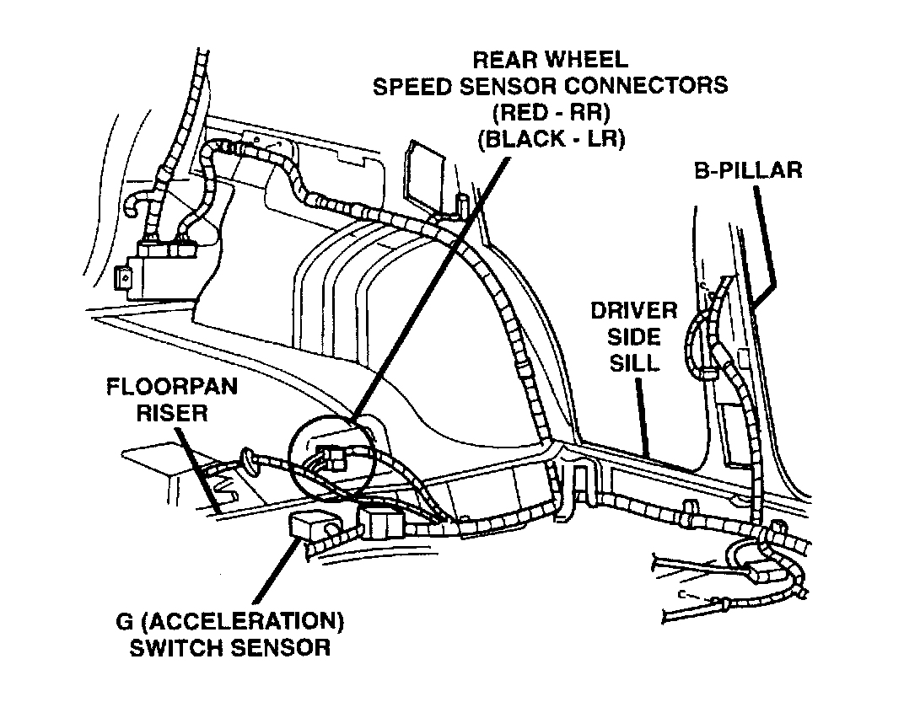

Acceleration/Deceleration Sensor: Description and Operation
ACCELERATION SWITCHAcceleration Switch:

The CAB monitors the acceleration switch (G Switch) at all times. The switch assembly contains three mercury switches that monitor vehicle deceleration rates (G-force). Sudden, rapid changes in vehicle and wheel deceleration rate trigger the switch, sending a signal to the CAB. The switch assembly provides three deceleration rates; two for forward braking and one for rearward braking. The switch provides an additional vehicle deceleration reference during 4WD operation. The switch reference signal is utilized by the CAB when all wheels are decelerating at the same speed.
G (Acceleration) Switch:

The acceleration switch is located under the rear seat.